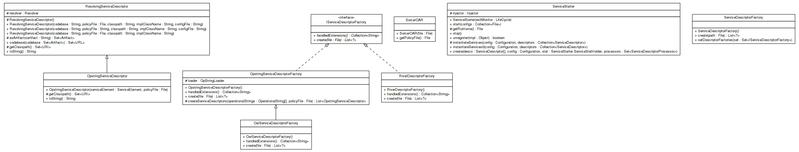

JavaScript is disabled on your browser.
Sorcer 1.0-M5 API Documentation

Overview
Package
Class
Use
Tree
Deprecated
Index
Help
Prev Package
Next Package
Frames
No Frames
All Classes
Package sorcer.boot
Interface Summary
Interface
Description
IServiceDescriptorFactory
Class Summary
Class
Description
OarServiceDescriptorFactory
OpstringServiceDescriptor
OpstringServiceDescriptorFactory
ResolvingServiceDescriptor
RiverDescriptorFactory
ServiceDescriptorFactory
ServiceStarter
SorcerOAR
Overview
Package
Class
Use
Tree
Deprecated
Index
Help
Copyright ©
Sorcersoft.com S.A.
.
Prev Package
Next Package
Frames
No Frames
All Classes
Copyright © 2013-2014
Sorcersoft.com S.A.
. All Rights Reserved.